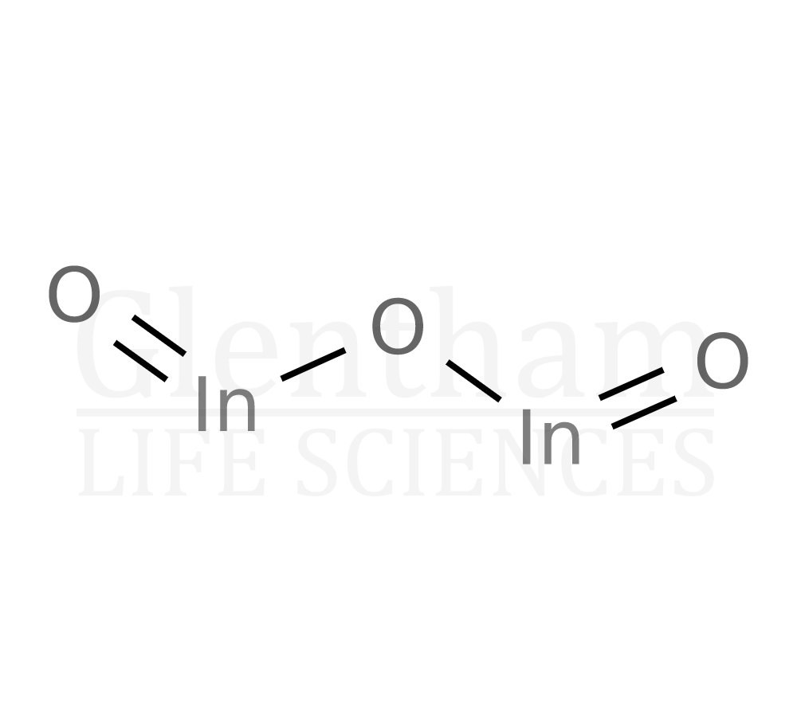

Introdução
•Nome: Óxido de índio (III) / Óxido de índio
•Fórmula química: In₂O₃
•Estado físico: Sólido branco acinzentado à temperatura ambiente
•Ligação química: Predominantemente iônica, com caráter covalente parcial
•Estrutura e geometria: Rede cristalina tridimensional; cada In³⁺ rodeado por 6 O²⁻ (geometria octaédrica)
•Modelo atômico de Bohr: In (2, 8, 18, 18, 3), O (2, 6); íons formam ligações na rede cristalina
•Ponto de fusão: ~1.900 °C; decomposição antes da ebulição
•Solubilidade: Pouco solúvel em água; solúvel em ácidos fortes
•Condutividade: Semicondutor, aumenta com dopagem
•Densidade: ~7,18 g/cm³

Aplicações
O óxido de índio (In₂O₃) é um composto importante, especialmente em eletrônica e materiais avançados. Suas aplicações se distribuem em vários campos:
Uso industrial:
•Pigmentos em vidros e cerâmicas.
•Catalisador em processos químicos.
•Aditivo em ligas metálicas.
Uso Medicinal:
•Pesquisas com nanopartículas antimicrobianas.
•Potencial em biomateriais e liberação de fármacos.
Uso Cotidiano:
•Vidros e telhas com controle térmico.
•Presente em celulares, TVs e computadores.
Uso tecnológico:
•Displays e telas sensíveis ao toque (via ITO).
•Painéis solares (camada condutora).
•Sensores de gases.
•Eletrônica transparente.
Curiosidades
História e Descoberta:
Descoberto por Ferdinand Reich e Hieronymus Theodor Richter em 1863, o índio foi descoberto durante a análise de minérios de zinco, principalmente na Alemanha. O óxido de índio (In₂O₃) foi identificado como a forma estável mais comum do elemento.
Obtenção/Extração
Produção:
O óxido de índio pode ser obtido a partir de minerais que contêm índio, ou pela precipitação química de sais de índio.
Industrialmente, geralmente se extrai como subproduto da produção de zinco e estanho, onde o índio está presente em pequenas quantidades.
Processo típico: dissolução do minério em ácido, seguida de precipitação e calcinação para formar In₂O₃.
Principais fontes
•Minerais: Sphalerita (ZnS), cassiterita (SnO₂), galena (PbS) – o índio ocorre em pequenas quantidades.
•Indústrias: Subproduto da refinação de zinco e estanho.
•Laboratório: Produção sintética a partir de sais de índio, como InCl₃, por oxidação térmica.